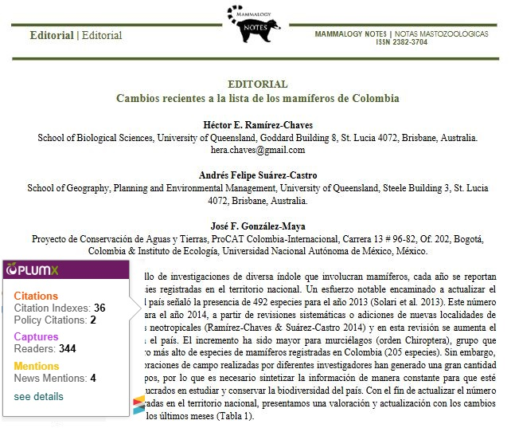
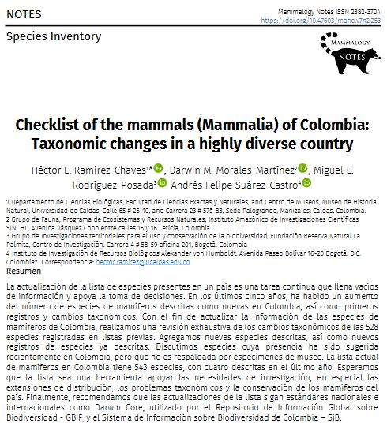
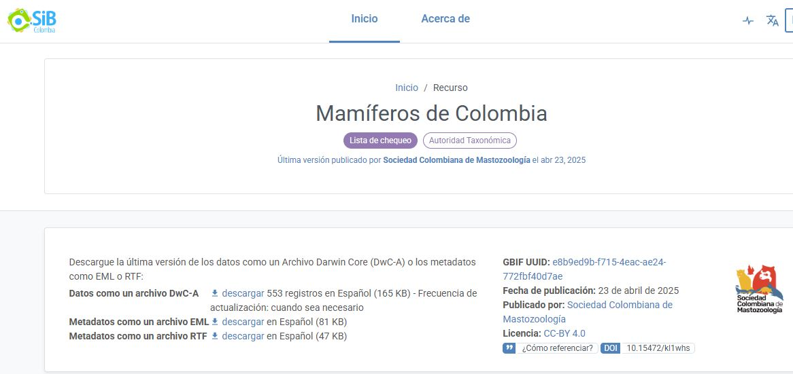
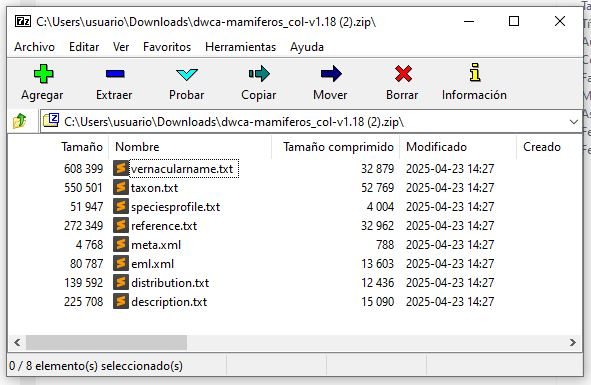
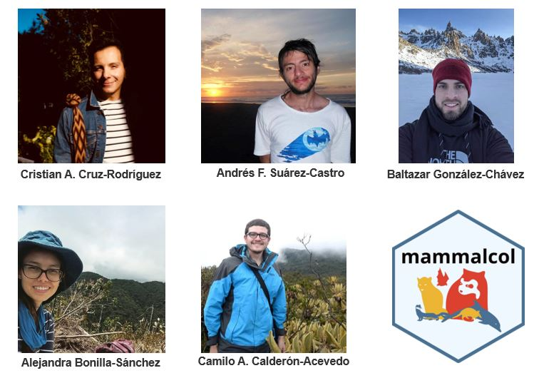
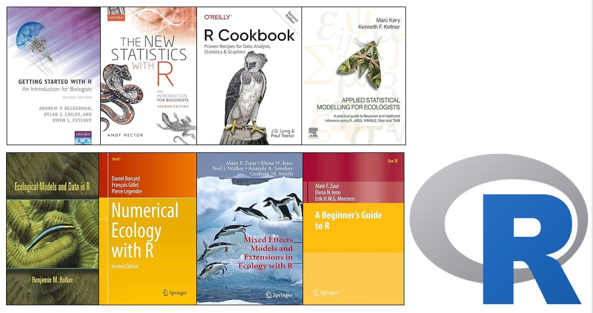
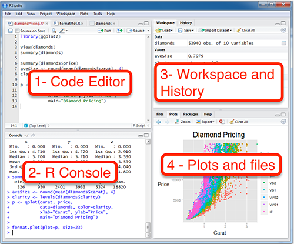
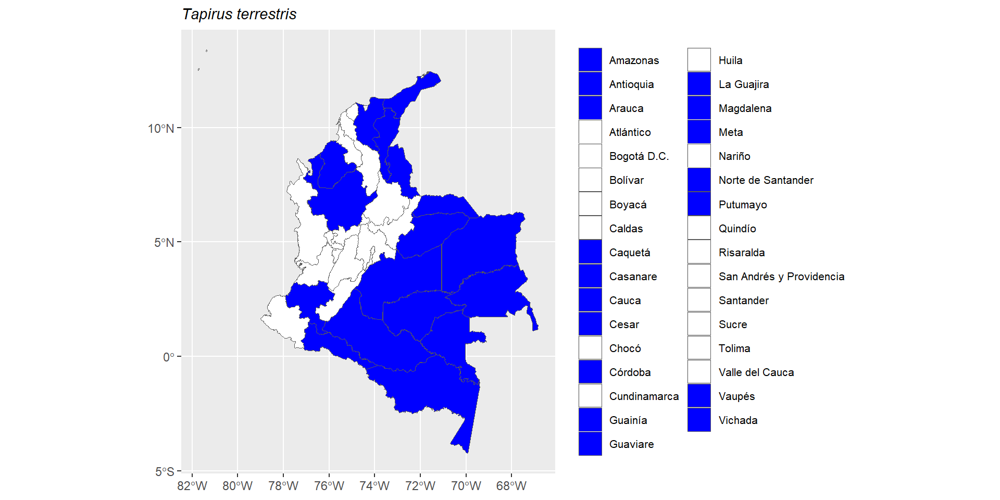

![]()
install.packages("mammalcol")mammalcol
Un paquete de R para descubrir la asombrosa diversidad de mamíferos de Colombia
Wildlife Conservation Society (WCS)
2025-11-27
Colombia un pais Megadiverso
Número uno en Aves
Número uno en Palmas
Segundo en anfibios
Segundo en peces (agua dulce)
y los mamíferos?
Colombia, a pesar de ser un ícono de biodiversidad, no aparece entre los cinco primeros lugares del planeta en diversidad de mamíferos, según el Mammal Diversity Database de la American Society of Mammalogists (ASM, 2023).
El número de especies de mamíferos ha ido cambiando
Hace 10 años 500 especies.

En 2021, 543 especies.

Un recurso Darwin Core Archive (DwC-A) del SiB Colombia

Un archivo comprimido con 8 archivos de texto

Contenido de la presentación
- Que es mammalcol ?
- Como surge mammalcol ?
- Por que un paquete de R ?
- Algunos casos de uso
Que es mammalcol ?
El objetivo de mammalcol es permitir un fácil acceso al Listado de Especies de Mamíferos de Colombia
Como surge mammalcol ?

Un proyecto colaborativo entre socios de la SCMas
Por que un paquete de R ?
Que es R?

R es ampliamente usado en Biología y Ecología. R es sofware libre y es muy poderoso!
Por que un paquete de R ?
Que es un paquete de R?
Los paquetes R son extensiones que contienen código, datos y documentación en un formato estandarizado que los usuarios de R pueden instalar, a través de un repositorio de software centralizado (CRAN).
Como se instala mammalcol?

Ejemplo de uso 1
Cargar el paquete
Hagámos una busqueda sencilla con una especie
name_submitted
1 Tapirus terrestris
taxonID
1 urn:lsid:catalogueoflife.org:taxon:4f200f4b-5e17-11e7-8cee-bc764e092680:col20170824
scientificNameID
1 http://www.itis.gov/servlet/SingleRpt/SingleRpt?search_topic=TSN&search_value=625000
scientificName
1 Tapirus terrestris
nameAccordingTo
1 Tom Orrell (custodian), Dave Nicolson (ed). (2019). ITIS Global: The Integrated Taxonomic Information System (version Jun 2017). In: Species 2000 & ITIS Catalogue of Life, 2019 Annual Checklist (Roskov Y., Ower G., Orrell T., Nicolson D., Bailly N., Kirk P.M., Bourgoin T., DeWalt R.E., Decock W., Nieukerken E. van, Zarucchi J., Penev L., eds.). Digital resource at www.catalogueoflife.org/annual-checklist/2019. Species 2000: Naturalis, Leiden, the Netherlands. ISSN 2405-884X.
kingdom phylum class order family genus specificEpithet
1 Animalia Chordata Mammalia Perissodactyla Tapiridae Tapirus terrestris
taxonRank scientificNameAuthorship taxonomicStatus taxonRemarks
1 Especie (Linnaeus, 1758) Válido Elevación (m): 0-2400
language rightsHolder
1 es Sociedad Colombiana de Mastozoología
bibliographicCitation
1 ARIAS-ALZATE A, JA PALACIO VIEIRA y J MUÑOZ-DURAN. 2009. Nuevos registros de distribución y oferta de hábitat de la danta colombiana (Tapirus terrestris colombianus) en las tierras bajas del norte de la Cordillera Central (Colombia). Mastozoología Neotropical 16:19-25.
inMDD Col_redlist
1 1 VU A4cd
distribution
1 Antioquia | Amazonas | Arauca | Caquetá | Cauca | Cesar | Córdoba | Guainía | La Guajira | Meta | Magdalena | Vaupés | Vichada | Guaviare | Casanare | Norte de Santander | Putumayo
endemic english_name Distance
1 No Lowland Tapir 78Ejemplo de uso 1
Hagámos una busqueda sencilla con una especie mal escrita.
name_submitted
1 Tapirus terrestre
taxonID
1 urn:lsid:catalogueoflife.org:taxon:4f200f4b-5e17-11e7-8cee-bc764e092680:col20170824
scientificNameID
1 http://www.itis.gov/servlet/SingleRpt/SingleRpt?search_topic=TSN&search_value=625000
scientificName
1 Tapirus terrestris
nameAccordingTo
1 Tom Orrell (custodian), Dave Nicolson (ed). (2019). ITIS Global: The Integrated Taxonomic Information System (version Jun 2017). In: Species 2000 & ITIS Catalogue of Life, 2019 Annual Checklist (Roskov Y., Ower G., Orrell T., Nicolson D., Bailly N., Kirk P.M., Bourgoin T., DeWalt R.E., Decock W., Nieukerken E. van, Zarucchi J., Penev L., eds.). Digital resource at www.catalogueoflife.org/annual-checklist/2019. Species 2000: Naturalis, Leiden, the Netherlands. ISSN 2405-884X.
kingdom phylum class order family genus specificEpithet
1 Animalia Chordata Mammalia Perissodactyla Tapiridae Tapirus terrestris
taxonRank scientificNameAuthorship taxonomicStatus taxonRemarks
1 Especie (Linnaeus, 1758) Válido Elevación (m): 0-2400
language rightsHolder
1 es Sociedad Colombiana de Mastozoología
bibliographicCitation
1 ARIAS-ALZATE A, JA PALACIO VIEIRA y J MUÑOZ-DURAN. 2009. Nuevos registros de distribución y oferta de hábitat de la danta colombiana (Tapirus terrestris colombianus) en las tierras bajas del norte de la Cordillera Central (Colombia). Mastozoología Neotropical 16:19-25.
inMDD Col_redlist
1 1 VU A4cd
distribution
1 Antioquia | Amazonas | Arauca | Caquetá | Cauca | Cesar | Córdoba | Guainía | La Guajira | Meta | Magdalena | Vaupés | Vichada | Guaviare | Casanare | Norte de Santander | Putumayo
endemic english_name Distance
1 No Lowland Tapir 77Ejemplo de uso 1
Hagámos un mapa de la distribución por departamentos.

En una próxima versión:
Esperamos incorporar mapas de distribución por municipio!
Ejemplo de uso 1
Hagamos el mapa de otra especie…
Error in mammalmap("Gorilla gorilla"): The species should be in the list. Make sure you used the function search_mammalcol first. Gorilla gorilla is not a species present in Colombia
Ejemplo de uso 2
Listados de especies por departamentos. En este caso todos los mamíferos de dos departamentos.
scientificName family order
1 Vampyressa voragine Phyllostomidae Chiroptera
2 Odocoileus goudotii Cervidae Artiodactyla
3 Dasypus fenestratus Dasypodidae Cingulata
4 Leopardus pardinoides Felidae Carnivora
5 Chilomys fumeus Cricetidae Rodentia
6 Melanomys columbianus Cricetidae Rodentia
7 Lontra enudris Mustelidae Carnivora
8 Tonatia maresi Phyllostomidae Chiroptera
9 Coendou pruinosus Erethizontidae Rodentia
10 Syntheosciurus granatensis Sciuridae Rodentia
11 Eumops hansae Molossidae Chiroptera
12 Micronycteris schmidtorum Phyllostomidae Chiroptera
13 Micronycteris hirsuta Phyllostomidae Chiroptera
14 Sigmodon alstoni Cricetidae Rodentia
15 Proechimys guairae Echimyidae Rodentia
16 Molossus bondae Molossidae Chiroptera
17 Nectomys apicalis Cricetidae Rodentia
18 Platyrrhinus nigellus Phyllostomidae Chiroptera
19 Platyrrhinus albericoi Phyllostomidae Chiroptera
20 Odocoileus cariacou Cervidae Artiodactyla
21 Oligoryzomys delicatus Cricetidae Rodentia
22 Gardnerycteris crenulata Phyllostomidae Chiroptera
23 Dasypus pastasae Dasypodidae Cingulata
24 Rhipidomys latimanus Cricetidae Rodentia
25 Rhipidomys fulviventer Cricetidae Rodentia
26 Rhipidomys couesi Cricetidae Rodentia
27 Aotus brumbacki Cebidae Primates
28 Alouatta seniculus Atelidae Primates
29 Dermanura phaeotis Phyllostomidae Chiroptera
30 Holochilus sciureus Cricetidae Rodentia
31 Transandinomys talamancae Cricetidae Rodentia
32 Caluromys lanatus Didelphidae Didelphimorphia
33 Cuniculus taczanowskii Cuniculidae Rodentia
34 Lasiurus frantzii Vespertilionidae Chiroptera
35 Cryptotis tamensis Soricidae Eulipotyphla
36 Puma concolor Felidae Carnivora
37 Leopardus wiedii Felidae Carnivora
38 Leopardus pardalis Felidae Carnivora
39 Nephelomys meridensis Cricetidae Rodentia
40 Dicotyles tajacu Tayassuidae Artiodactyla
41 Tayassu pecari Tayassuidae Artiodactyla
42 Rhogeessa io Vespertilionidae Chiroptera
43 Leptonycteris curasoae Phyllostomidae Chiroptera
44 Neoeptesicus chiriquinus Vespertilionidae Chiroptera
45 Lagothrix lagothricha Atelidae Primates
46 Ateles hybridus Atelidae Primates
47 Aotus griseimembra Cebidae Primates
48 Cebus versicolor Cebidae Primates
49 Cebus leucocephalus Cebidae Primates
50 Sapajus apella Cebidae Primates
51 Saimiri cassiquiarensis Cebidae Primates
52 Nasua narica Procyonidae Carnivora
53 Molossus rufus Molossidae Chiroptera
54 Cynomops planirostris Molossidae Chiroptera
55 Cynomops greenhalli Molossidae Chiroptera
56 Vampyressa thyone Phyllostomidae Chiroptera
57 Enchisthenes hartii Phyllostomidae Chiroptera
58 Trinycteris nicefori Phyllostomidae Chiroptera
59 Micronycteris microtis Phyllostomidae Chiroptera
60 Lophostoma silvicola Phyllostomidae Chiroptera
61 Lampronycteris brachyotis Phyllostomidae Chiroptera
62 Glyphonycteris daviesi Phyllostomidae Chiroptera
63 Anoura luismanueli Phyllostomidae Chiroptera
64 Herpailurus yagouaroundi Felidae Carnivora
65 Sigmodon hirsutus Cricetidae Rodentia
66 Cuniculus paca Cuniculidae Rodentia
67 Hydrochoerus hydrochaeris Caviidae Rodentia
68 Zygodontomys brevicauda Cricetidae Rodentia
69 Oecomys trinitatis Cricetidae Rodentia
70 Oecomys speciosus Cricetidae Rodentia
71 Oecomys roberti Cricetidae Rodentia
72 Oecomys concolor Cricetidae Rodentia
73 Cryptotis thomasi Soricidae Eulipotyphla
74 Oecomys bicolor Cricetidae Rodentia
75 Didelphis pernigra Didelphidae Didelphimorphia
76 Monodelphis palliolata Didelphidae Didelphimorphia
77 Vampyriscus bidens Phyllostomidae Chiroptera
78 Uroderma bakeri Phyllostomidae Chiroptera
79 Sturnira parvidens Phyllostomidae Chiroptera
80 Marmosa robinsoni Didelphidae Didelphimorphia
81 Chironectes minimus Didelphidae Didelphimorphia
82 Lutreolina crassicaudata Didelphidae Didelphimorphia
83 Melanomys caliginosus Cricetidae Rodentia
84 Thomasomys hylophilus Cricetidae Rodentia
85 Nectomys rattus Cricetidae Rodentia
86 Necromys urichi Cricetidae Rodentia
87 Ateles belzebuth Atelidae Primates
88 Cebus albifrons Cebidae Primates
89 Coendou longicaudatus Erethizontidae Rodentia
90 Dinomys branickii Dinomyidae Rodentia
91 Cavia aperea Caviidae Rodentia
92 Dasyprocta fuliginosa Dasyproctidae Rodentia
93 Dasyprocta punctata Dasyproctidae Rodentia
94 Mesomys hispidus Echimyidae Rodentia
95 Proechimys oconnelli Echimyidae Rodentia
96 Molossus molossus Molossidae Chiroptera
97 Nyctinomops macrotis Molossidae Chiroptera
98 Inia geoffrensis Iniidae Artiodactyla
99 Eumops glaucinus Molossidae Chiroptera
100 Diphylla ecaudata Phyllostomidae Chiroptera
101 Noctilio leporinus Noctilionidae Chiroptera
102 Lasiurus ega Vespertilionidae Chiroptera
103 Myotis diminutus Vespertilionidae Chiroptera
104 Dermanura glauca Phyllostomidae Chiroptera
105 Dermanura gnoma Phyllostomidae Chiroptera
106 Dermanura bogotensis Phyllostomidae Chiroptera
107 Panthera onca Felidae Carnivora
108 Urocyon cinereoargenteus Canidae Carnivora
109 Trichechus manatus Trichechidae Sirenia
110 Cerdocyon thous Canidae Carnivora
111 Speothos venaticus Canidae Carnivora
112 Mazama rufina Cervidae Artiodactyla
113 Heteromys anomalus Heteromyidae Rodentia
114 Diclidurus albus Emballonuridae Chiroptera
115 Peropteryx leucoptera Emballonuridae Chiroptera
116 Peropteryx macrotis Emballonuridae Chiroptera
117 Rhynchonycteris naso Emballonuridae Chiroptera
118 Saccopteryx bilineata Emballonuridae Chiroptera
119 Saccopteryx canescens Emballonuridae Chiroptera
120 Saccopteryx leptura Emballonuridae Chiroptera
121 Macrophyllum macrophyllum Phyllostomidae Chiroptera
122 Micronycteris megalotis Phyllostomidae Chiroptera
123 Micronycteris minuta Phyllostomidae Chiroptera
124 Phyllostomus discolor Phyllostomidae Chiroptera
125 Phyllostomus elongatus Phyllostomidae Chiroptera
126 Phyllostomus hastatus Phyllostomidae Chiroptera
127 Trachops cirrhosus Phyllostomidae Chiroptera
128 Vampyrum spectrum Phyllostomidae Chiroptera
129 Lionycteris spurrelli Phyllostomidae Chiroptera
130 Lonchophylla robusta Phyllostomidae Chiroptera
131 Anoura cultrata Phyllostomidae Chiroptera
132 Anoura geoffroyi Phyllostomidae Chiroptera
133 Anoura latidens Phyllostomidae Chiroptera
134 Choeroniscus godmani Phyllostomidae Chiroptera
135 Glossophaga longirostris Phyllostomidae Chiroptera
136 Glossophaga soricina Phyllostomidae Chiroptera
137 Carollia brevicauda Phyllostomidae Chiroptera
138 Carollia castanea Phyllostomidae Chiroptera
139 Carollia perspicillata Phyllostomidae Chiroptera
140 Rhinophylla fischerae Phyllostomidae Chiroptera
141 Rhinophylla pumilio Phyllostomidae Chiroptera
142 Artibeus amplus Phyllostomidae Chiroptera
143 Artibeus lituratus Phyllostomidae Chiroptera
144 Artibeus obscurus Phyllostomidae Chiroptera
145 Artibeus planirostris Phyllostomidae Chiroptera
146 Chiroderma villosum Phyllostomidae Chiroptera
147 Mesophylla macconnelli Phyllostomidae Chiroptera
148 Sphaeronycteris toxophyllum Phyllostomidae Chiroptera
149 Sturnira erythromos Phyllostomidae Chiroptera
150 Sturnira ludovici Phyllostomidae Chiroptera
151 Sturnira tildae Phyllostomidae Chiroptera
152 Uroderma bilobatum Phyllostomidae Chiroptera
153 Uroderma magnirostrum Phyllostomidae Chiroptera
154 Vampyressa melissa Phyllostomidae Chiroptera
155 Platyrrhinus brachycephalus Phyllostomidae Chiroptera
156 Platyrrhinus dorsalis Phyllostomidae Chiroptera
157 Platyrrhinus helleri Phyllostomidae Chiroptera
158 Platyrrhinus umbratus Phyllostomidae Chiroptera
159 Platyrrhinus vittatus Phyllostomidae Chiroptera
160 Desmodus rotundus Phyllostomidae Chiroptera
161 Diaemus youngii Phyllostomidae Chiroptera
162 Noctilio albiventris Noctilionidae Chiroptera
163 Pteronotus gymnonotus Mormoopidae Chiroptera
164 Thyroptera tricolor Thyropteridae Chiroptera
165 Neoeptesicus brasiliensis Vespertilionidae Chiroptera
166 Neoeptesicus furinalis Vespertilionidae Chiroptera
167 Myotis albescens Vespertilionidae Chiroptera
168 Myotis nigricans Vespertilionidae Chiroptera
169 Myotis riparius Vespertilionidae Chiroptera
170 Rhogeessa minutilla Vespertilionidae Chiroptera
171 Eumops auripendulus Molossidae Chiroptera
172 Molossops temmincki Molossidae Chiroptera
173 Molossus pretiosus Molossidae Chiroptera
174 Promops centralis Molossidae Chiroptera
175 Promops nasutus Molossidae Chiroptera
176 Tapirus terrestris Tapiridae Perissodactyla
177 Tremarctos ornatus Ursidae Carnivora
178 Pteronura brasiliensis Mustelidae Carnivora
179 Conepatus semistriatus Mephitidae Carnivora
180 Eira barbara Mustelidae Carnivora
181 Galictis vittata Mustelidae Carnivora
182 Potos flavus Procyonidae Carnivora
183 Nasua olivacea Procyonidae Carnivora
184 Procyon cancrivorus Procyonidae Carnivora
185 Bradypus variegatus Bradypodidae Pilosa
186 Cabassous centralis Chlamyphoridae Cingulata
187 Dasypus sabanicola Dasypodidae Cingulata
188 Priodontes maximus Chlamyphoridae Cingulata
189 Myrmecophaga tridactyla Myrmecophagidae Pilosa
190 Tamandua mexicana Myrmecophagidae Pilosa
191 Tamandua tetradactyla Myrmecophagidae Pilosa
192 Didelphis marsupialis Didelphidae Didelphimorphia
193 Myotis handleyi Vespertilionidae Chiroptera
194 Cynomops tonkigui Molossidae Chiroptera
195 Lophostoma brasiliense Phyllostomidae Chiroptera
196 Neogale frenata Mustelidae Carnivora
197 Neoeptesicus orinocensis Vespertilionidae Chiroptera
198 Molossops griseiventer Molossidae Chiroptera
locality
1 Casanare | Norte de Santander
2 Boyacá | Cundinamarca | Santander | Norte de Santander
3 Antioquia | Atlántico | Bolívar | Boyacá | Caldas | Cauca |Chocó | Córdoba | Cundinamarca | Huila | Nariño | La Guajira | Norte de Santander | Quindío | Risaralda | Santander | Sucre | Tolima | Valle del Cauca
4 Antioquia | Boyacá | Caldas | Cauca | Huila | Meta | Nariño | Putumayo | Quindío | Risaralda | Santander | Valle del Cauca | Caquetá | Amazonas | Arauca | Córdoba | Guainía | Tolima
5 Norte de Santander
6 Magdalena | Norte de Santander
7 Arauca | Casanare | Guainía |Meta | Putumayo |Vichada | Amazonas | Caquetá | Guaviare | Vaupés |
8 Amazonas | Caquetá | Casanare | Huila | Meta | Putumayo | Vaupés | Guaviare | Arauca | Guainía
9 Cundinamarca | Norte de Santander | Santander | Guainía | Meta | Arauca | Tolima
10 Caldas | Cauca | Nariño | Quindío | Risaralda | Putumayo | Amazonas | Antioquia | Arauca | Atlántico | Bolívar | Boyacá | Casanare | Cesar | Chocó | Córdoba | Cundinamarca | Guaviare | Huila | La Guajira | Magdalena | Norte de Santander | Santander | Sucre | Tolima | Valle del Cauca | Vichada
11 Caldas | Arauca | Caquetá | Casanare | Guainía
12 Antioquia | Chocó | Magdalena | Norte de Santander | Santander | Vichada | Arauca | Casanare | Guainía | Guaviare | Meta
13 Antioquia | Caldas | Caquetá | Cauca | Chocó | Córdoba | Magdalena | Meta | Valle del Cauca | Guaviare | Arauca | Casanare | Guainía
14 Arauca | Meta | Vichada | Caldas | Casanare | Guainía
15 Arauca | Norte de Santander
16 Antioquia | Atlántico | Bolívar | Caldas | Cauca | Cesar | Córdoba | Chocó | Cundinamarca | Magdalena | Meta | Nariño | Norte de Santander | Risaralda | Valle del Cauca | Arauca | Caquetá | Casanare
17 Boyacá | Caquetá | Cundinamarca | Huila | Meta | Norte de Santander
18 Boyacá | Caquetá | Cauca | Cesar | Cundinamarca | Huila | Magdalena | Meta | Nariño | Norte de Santander | Putumayo | Quindío | Risaralda | Santander | Valle del Cauca
19 Antioquia | Boyacá | Cundinamarca | Magdalena | Meta | Norte de Santander | Quindío | Risaralda | Santander | Valle del Cauca | Putumayo | Caldas | Tolima
20 Caquetá | Casanare | Cesar | La Guajira | Magdalena | Meta | Santander | Valle del Cauca | Vichada | Amazonas | Guaviare | Meta | Vaupés | Arauca | Córdoba
21 Antioquia | Boyacá | Cauca | Cesar | Cundinamarca | Meta | Quindío | Vaupés | Valle del Cauca | Vichada | Arauca | Risaralda | Tolima
22 Vaupés | Amazonas | Caquetá | Guainía | Guaviare | Meta | Vaupés | Vichada | Arauca | Caldas | Caquetá | Casanare | Cauca | Chocó | Córdoba | Magdalena | Nariño | Putumayo | Quindío | Sucre | Tolima | Valle del Cauca
23 Cauca | Meta | Putumayo | Nariño | Arauca | Caquetá | Guainía | Guaviare
24 Antioquia | Boyacá | Cauca | Cundinamarca | Huila | Norte de Santander | Quindío | Risaralda | Valle del Cauca | Caldas | Nariño | Risaralda | Tolima
25 Cundinamarca | Norte de Santander | Boyacá | Casanare | Cauca
26 Meta | Arauca | Casanare
27 Arauca | Casanare | Meta | Vichada
28 Bolívar | Caldas | Cauca | Quindío | Risaralda | Valle del Cauca | Amazonas | Caquetá | Guaviare | Guainía | Nariño | Meta | Putumayo | Vichada | Antioquia | Arauca | Atlántico | Casanare | Cesar | Córdoba | La Guajira | Magdalena | Norte de Santander | Sucre | Tolima
29 Antioquia | Cauca | Chocó | Nariño | Quindío | Risaralda | Valle del Cauca | Amazonas | Arauca | Caldas | Caquetá | Córdoba | Guainía | Magdalena | Norte de Santander | Putumayo | Santander | Tolima
30 Meta | Arauca | Casanare | Guainía
31 Antioquia | Bolívar | Boyacá | Caldas | Cauca | Cesar | Chocó | Córdoba | Cundinamarca | La Guajira | Magdalena | Norte de Santander | Santander | Meta | Putumayo | Sucre
32 Amazonas | Antioquia | Boyacá | Caquetá | Cesar | Cundinamarca | Guaviare | Huila | La Guajira | Magdalena | Meta | Norte de Santander | Tolima | Putumayo | Caldas | Casanare | Guainía | Santander | Vichada
33 Antioquia | Boyacá | Cauca | Cesar | Cundinamarca | Huila | Nariño | Norte de Santander | Quindío | Risaralda | Tolima | Valle del Cauca | Arauca | Caldas
34 Caquetá | Cauca | Cesar | Cundinamarca | Meta | Norte de Santander | Quindío | Risaralda | Santander
35 Norte de Santander | Santander
36 Antioquia | Arauca | Bolívar | Córdoba | Caldas | Cauca | Caquetá | Casanare | Chocó | Magdalena | Meta | Nariño | Norte de Santander | Putumayo | Quindío | Risaralda | Sucre | Vaupés | Vichada | Amazonas | Guaviare | Atlántico | Cesar | Córdoba | Guainía | Huila | Tolima | Valle del Cauca
37 Cauca | Quindío | Amazonas | Guainía | Meta | Putumayo | Antioquia | Arauca | Atlántico | Bolívar | Caldas | Caquetá | Casanare | Chocó | Córdoba | Cundinamarca | Guaviare | Magdalena | Nariño | Norte de Santander | Tolima | Valle del Cauca | Vichada
38 Boyacá | Cauca | Caldas | Cesar | Cundinamarca | Guaviare | Meta | Nariño | Putumayo | Quindío | Risaralda | Sucre | Amazonas | Caquetá | Guainía | Vaupés | Vichada | Antioquia | Arauca | Atlántico | Bolívar | Casanare | Chocó | Córdoba | Huila | Magdalena | Santander | Tolima | Valle del Cauca
39 Boyacá | Norte de Santander | Santander
40 Cauca | Quindío | Risaralda | Amazonas | Guaviare | Meta | Putumayo | Vaupés | Antioquia | Arauca | Atlántico | Bolívar | Caldas | Caquetá | Casanare | Cesar | Chocó | Córdoba | Guainía | Magdalena | Nariño | Santander | Tolima | Valle del Cauca | Vichada
41 Amazonas | Cauca | Caquetá | Guainía | Guaviare | Meta | Putumayo | Vaupés | Vichada | Antioquia | Arauca | Bolívar | Casanare | Chocó | Córdoba | La Guajira | Magdalena | Quindío | Valle del Cauca
42 Antioquia | Atlántico | Caldas | Cauca | Caquetá | Cesar | Córdoba | Chocó | Huila | Magdalena | Meta | San Andrés y Providencia | Santander | Tolima | Valle del Cauca | Vichada | Guaviare | Arauca | Casanare | Cundinamarca | Guainía | Nariño
43 Bolívar | La Guajira | Norte de Santander | Santander | Magdalena
44 Antioquia | Caldas | Caquetá | Cauca | Cundinamarca | Quindío | Risaralda | Santander | Valle del Cauca | Guaviare | Chocó | Norte de Santander
45 Cauca | Nariño | Amazonas | Caquetá | Guainía | Guaviare | Meta | Putumayo | Vaupés | Vichada | Antioquia | Arauca | Atlántico | Bolívar | Casanare | Huila
46 Antioquia | Bolívar | Boyacá | Caldas | Cesar | La Guajira | Magdalena | Norte de Santander | Santander | Arauca
47 Magdalena | Norte de Santander | Santander | Atlántico | Bolívar | Caldas | Cesar | Sucre
48 Antioquia | Bolívar | Boyacá | Cesar | Cundinamarca | Norte de Santander | Sucre | Tolima | Caldas | Santander
49 Norte de Santander | Santander
50 Boyacá | Cauca | Cundinamarca | Guainía | Huila | Meta | Nariño | Putumayo | Valle del Cauca | Vichada | Amazonas | Caquetá | Guaviare | Vaupés | Arauca | Casanare
51 Boyacá | Cauca | Guainía | Huila | Meta | Putumayo | Amazonas | Caquetá | Guaviare | Vaupés | Vichada | Arauca | Bolívar | Casanare
52 Chocó | Magdalena | Antioquia | Atlántico | Chocó | Nariño | Norte de Santander
53 Arauca | Caldas | Norte de Santander | Tolima | Putumayo | Guaviare | Amazonas | Antioquia | Atlántico | Caquetá | Casanare | Guainía | Meta | Vichada
54 Amazonas | Arauca | Boyacá | Casanare | Meta | Vichada | Caquetá | Cundinamarca | Norte de Santander | Putumayo | Guainía | Sucre
55 Cundinamarca | Tolima | Meta | Putumayo | Amazonas | Arauca
56 Caldas | Cauca | Quindío | Risaralda | Amazonas | Caquetá | Guaviare | Meta | Putumayo | Antioquia | Arauca | Casanare | Chocó | Córdoba | Guainía | Magdalena | Nariño | Norte de Santander | Sucre | Tolima | Valle del Cauca | Vaupés | Vichada
57 Caldas | Cauca | Cundinamarca | Quindío | Risaralda | Amazonas | Caquetá | Putumayo | Antioquia | Arauca | Casanare | Cesar | Chocó | Guainía | Huila | Magdalena | Nariño | Norte de Santander | Putumayo | Tolima | Valle del Cauca
58 Antioquia | Norte de Santander | Tolima | Valle del Cauca | Caquetá | Guaviare | Vaupés | Vichada | Arauca | Caldas | Casanare | Chocó | Guainía
59 Cundinamarca | Magdalena | Amazonas | Caquetá | Guaviare | Arauca | Casanare | Chocó | Córdoba | Guainía | Norte de Santander | Tolima
60 Cauca | Amazonas | Caquetá | Guainía | Guaviare | Meta | Putumayo | Vaupés | Vichada | Antioquia | Arauca | Caldas | Caquetá | Casanare | Chocó | Córdoba | Magdalena | Sucre | Tolima | Valle del Cauca
61 Antioquia | Bolívar | Caldas | Caquetá | Casanare | La Guajira | Meta | Tolima | Vaupés | Vichada | Guaviare | Meta | Arauca | Chocó
62 Arauca | Meta | Amazonas | Guaviare | Vaupés | Guainía
63 Cundinamarca | Santander | Valle del Cauca | Arauca | Boyacá | Casanare | Norte de Santander
64 Caldas | Cauca | Cundinamarca | Huila | Meta | Quindío | Risaralda | Tolima | Guainía | Guaviare | Meta | Antioquia | Arauca | Atlántico | Bolívar | Casanare | Cesar | Chocó | Córdoba | Magdalena | Nariño | Putumayo | Sucre | Valle del Cauca | Vichada
65 Atlántico | Boyacá | Cesar | Cundinamarca | La Guajira | Huila | Magdalena | Norte de Santander | Santander | Tolima | Antioquia | Caldas | Casanare | Vichada
66 Caldas | Cauca | Meta | Quindío | Risaralda | Amazonas | Guaviare | Meta | Putumayo | Vaupés | Antioquia | Arauca | Atlántico | Bolívar | Caquetá | Casanare | Cesar | Chocó | Córdoba | Cundinamarca | Guainía | Huila | La Guajira | Magdalena | Nariño | Norte de Santander | Santander | Sucre | Tolima | Valle del Cauca | Vichada
67 Amazonas | Caquetá | Guaviare | Meta | Putumayo | Antioquia | Arauca | Bolívar | Cauca | Chocó | Cundinamarca | Guainía | Risaralda | Santander | Valle del Cauca | Vichada
68 Antioquia | Atlántico | Bolívar | Casanare | Cesar | Chocó | Córdoba | Cundinamarca | La Guajira | Huila | Magdalena | Meta | Sucre | Norte de Santander | Tolima | Vichada | Arauca | Caldas | Guainía
69 Boyacá | Córdoba | Cesar | Caquetá | Huila | Meta | Risaralda | Valle del Cauca | Vichada | Arauca | Casanare | Guainía
70 Magdalena | Arauca | Casanare | Guainía | Magdalena
71 Caquetá | Meta | Putumayo | Arauca | Casanare | Guainía
72 Amazonas | Caquetá | Cauca | Meta | Vichada | Guaviare | Arauca | Atlántico | Casanare | Guainía | Norte de Santander | Putumayo | Vaupés | Vichada
73 Cundinamarca | Norte de Santander | Santander | Arauca | Boyacá | Valle del Cauca
74 Amazonas | Antioquia | Arauca | Caquetá | Cauca | Meta | Nariño | Risaralda | Vaupés | Putumayo | Casanare | Chocó | Guainía | Guaviare | La Guajira | Magdalena | Sucre | Vichada
75 Antioquia | Boyacá | Caldas | Cauca | Cesar | Cundinamarca | Huila | La Guajira | Magdalena | Meta | Nariño | Norte de Santander | Quindío | Risaralda | Santander | Tolima | Valle del Cauca | Arauca | Atlántico | Casanare | Chocó
76 Caquetá | Norte de Santander | Vichada | Caldas
77 Boyacá | Caquetá | Cauca | Meta | Vaupés | Putumayo | Vichada | Arauca | Casanare | Guainía
78 Arauca | Cundinamarca | Meta
79 Quindío | Risaralda | Amazonas | Antioquia | Atlántico | Caldas | Caquetá | Casanare | Cauca | Córdoba | Cundinamarca | Guainía | Magdalena | Meta | Nariño | Norte de Santander | Putumayo | Santander | Sucre | Valle del Cauca | Vaupés
80 Antioquia | Arauca | Atlántico | Bolívar | Boyacá | Casanare | Cesar | Córdoba | Cundinamarca | Huila | La Guajira | Magdalena | Norte de Santander | Sucre | Tolima | Caldas | Santander | Valle del Cauca
81 Antioquia | Caldas | Caquetá | Cauca | Cundinamarca | Meta | Putumayo | Risaralda | Quindío | Arauca | Bolívar | Casanare | Chocó | Córdoba | Guainía | Magdalena | Nariño | Santander | Tolima | Valle del Cauca
82 Meta | Vichada | Arauca | Guainía
83 Antioquia | Cauca | Chocó | Caldas | Huila | Meta | Nariño | Quindío | Risaralda | Tolima | Valle del Cauca | Caquetá | Arauca
84 Boyacá | Cauca | Norte de Santander | Santander
85 Cesar | Vaupés | Amazonas | Caquetá | Guainía | Meta | Putumayo | Vaupés | Arauca | Casanare | Norte de Santander | Vichada
86 Cauca | Cundinamarca | La Guajira | Meta | Arauca | Casanare
87 Boyacá | Caquetá | Casanare | Meta | Putumayo | Guaviare | Antioquia | Arauca | Guainía
88 Amazonas | Arauca | Caquetá | Guainía | Putumayo | Vaupés | Vichada | Guaviare | Nariño | Casanare | Cundinamarca | Magdalena | Meta | Santander | Sucre
89 Amazonas | Antioquia | Atlántico | Boyacá | Casanare | Caquetá | Cauca | Cesar | Córdoba | Cundinamarca | Guainía | Guaviare | Magdalena | Meta | Norte de Santander | La Guajira | Putumayo | Sucre | Vichada | Arauca | Bolívar | Caldas
90 Antioquia | Boyacá | Cauca | Chocó | Caquetá | Cundinamarca | Huila | Nariño | Norte de Santander | Quindío | Risaralda | Tolima | Valle del Cauca | Arauca | Caldas | Casanare | Putumayo
91 Nariño | Arauca | Boyacá | Casanare | Guainía | Guaviare
92 Amazonas | Caquetá | Cesar | Magdalena | Meta | Vaupés | Vichada | Guaviare | Putumayo | Arauca | Casanare | Cauca | Guainía
93 Antioquia | Cauca | Cesar | Chocó | Magdalena | Norte de Santander | Quindío | Risaralda | Santander | Sucre | Valle del Cauca | Arauca | Atlántico | Bolívar | Caldas | Córdoba | Magdalena | Nariño | Tolima
94 Amazonas | Caquetá | Vaupés | Guaviare | Meta | Guainía | Norte de Santander | Putumayo
95 Boyacá | Casanare | Cundinamarca | Meta | Arauca | Vichada
96 Arauca | Caldas | Cauca | Quindío | Risaralda | Tolima | Amazonas | Caquetá | Guainía | Guaviare | Meta | Putumayo | Vaupés | Antioquia | Atlántico | Bolívar | Casanare | Chocó | Córdoba | Cundinamarca | Huila | Magdalena | Nariño | San Andrés y Providencia | Valle del Cauca
97 Antioquia | Magdalena | Meta | Norte de Santander | Casanare | Chocó | Guainía
98 Amazonas | Arauca | Meta | Vaupés | Vichada | Guaviare | Putumayo | Caquetá | Casanare | Guainía
99 Arauca | Magdalena | Tolima | Valle del Cauca | Meta | Antioquia | Atlántico | Caquetá | Casanare | Chocó | Córdoba | Cundinamarca | Guainía
100 Magdalena | Meta | Vaupés | Amazonas | Caquetá | Meta | Antioquia | Arauca | Casanare | Cauca | Chocó | Guainía | Valle del Cauca
101 Santander | Valle del Cauca | Amazonas | Caquetá | Guaviare | Meta | Putumayo | Vaupés | Antioquia | Arauca | Atlántico | Caldas | Casanare | Chocó | Córdoba | Guainía | Magdalena | Nariño | Sucre | Tolima
102 Antioquia | Arauca | Atlántico | Caquetá | Magdalena | Meta | Santander | Sucre | Valle del Cauca | Vichada | Amazonas | Casanare | Chocó | Córdoba
103 Nariño | Arauca
104 Boyacá | Caldas | Caquetá | Cauca | Cundinamarca | Magdalena | Meta | Santander | Valle del Cauca | Amazonas | Guainía | Putumayo | Vaupés | Antioquia | Casanare | Chocó | Guainía | Nariño | Norte de Santander | Tolima | Vichada
105 Amazonas | Caquetá | Casanare | Meta | Vaupés | Guainía | Guaviare | Meta | Putumayo | Vichada | Norte de Santander
106 Antioquia | Boyacá | Cesar | Cundinamarca | Norte de Santander | Quindío | Risaralda | Santander | Arauca | Casanare | Cauca | Tolima
107 Amazonas | Arauca | Caldas | Caquetá | Cauca | Cesar | Meta | Putumayo | Santander | Sucre | Guainía | Guaviare | Nariño | Vaupés | Vichada | Antioquia | Arauca | Atlántico | Bolívar | Casanare | Chocó | Córdoba | Magdalena | Tolima | Valle del Cauca
108 Antioquia | Atlántico | Boyacá | Cundinamarca | Magdalena | Norte de Santander | Casanare
109 Atlántico | Arauca | Bolívar | Casanare | Cesar | Córdoba | Magdalena | Meta | Santander | Sucre | Vichada | Guainía
110 Antioquia | Arauca | Atlántico | Bolívar | Boyacá | Caldas | Caquetá | Casanare | Cauca | Cesar | Chocó | Córdoba | Cundinamarca | Huila | Magdalena | Meta | Nariño | Norte de Santander | Putumayo | Quindío | Risaralda | Santander | Sucre | Tolima | Valle del Cauca | Amazonas | Guaviare | Guainía | Vichada
111 Amazonas | Caquetá | Casanare | Guaviare | Meta | Vichada | Putumayo | Antioquia | Arauca | Bolívar | Guainía
112 Antioquia | Boyacá | Caldas | Cauca | Cesar | Cundinamarca | Huila | Nariño | Norte de Santander | Quindío | Risaralda | Santander | Tolima | Valle del Cauca | Caquetá
113 Antioquia | Atlántico | Bolívar | Boyacá | Cesar | Córdoba | Cundinamarca | La Guajira | Magdalena | Norte de Santander | Sucre | Tolima | Risaralda
114 Córdoba | Guaviare | Meta | Norte de Santander | Tolima | Valle del Cauca | Vaupés | Antioquia | Caquetá | Casanare | Guainía | Vichada
115 Amazonas | Casanare | Meta | Vichada | Arauca | Caquetá | Guainía
116 Amazonas | Antioquia | Bolívar | Boyacá | Caquetá | Cauca | Córdoba | Guaviare | La Guajira | Magdalena | Meta | Santander | Sucre | Putumayo | Valle del Cauca | Vaupés | Vichada | Guainía | Arauca | Atlántico | Casanare | Chocó | Nariño | Norte de Santander | Tolima
117 Amazonas | Antioquia | Bolívar | Boyacá | Caldas | Caquetá | Casanare | Cauca | Cesar | Chocó | Córdoba |Guainía | Magdalena | Meta | Putumayo | Sucre | Valle del Cauca | Vichada | Guaviare | Arauca | Atlántico | Guainía | Tolima | Vaupés
118 Amazonas | Antioquia | Arauca | Caldas | Caquetá | Cauca | Cesar | Chocó | Córdoba | Guainía | Guaviare | La Guajira | Magdalena | Meta | Norte de Santander | Quindío | Risaralda | Valle del Cauca | Vichada | Putumayo | Vaupés | Atlántico | Casanare | Cundinamarca | Nariño | Sucre | Tolima
119 Bolívar | Boyacá | Magdalena | Meta | Sucre | Tolima | Vichada | Guaviare | Antioquia | Arauca | Atlántico | Caquetá | Casanare | Cesar | Guainía | Guaviare | La Guajira
120 Amazonas | Antioquia | Bolívar | Caldas | Cauca | Córdoba | Meta | Risaralda | Sucre | Valle del Cauca | Caquetá | Guainía | Guaviare | Arauca | Atlántico | Casanare | Chocó | Córdoba | Cundinamarca | Putumayo | Santander | Tolima | Vichada
121 Magdalena | Valle del Cauca | Amazonas | Putumayo | Vaupés | Antioquia | Arauca | Casanare | Chocó | Córdoba | Guainía | Guaviare
122 Caldas | Cauca | Cundinamarca | Quindío | Risaralda | Amazonas | Caquetá | Guaviare | Meta | Putumayo | Vaupés | Antioquia | Arauca | Atlántico | Casanare | Cesar | Chocó | Córdoba | Guainía | Huila | Magdalena | Nariño | Norte de Santander | Tolima | Valle del Cauca | Vichada
123 Quindío | Amazonas | Caquetá | Cauca | Meta | Putumayo | Vichada | Antioquia | Arauca | Casanare | Chocó | Córdoba | Guainía | Guaviare | Magdalena | Valle del Cauca
124 Arauca | Caldas | Cauca | Cundinamarca | Nariño | Quindío | Risaralda | Santander | Amazonas | Caquetá | Guaviare | Meta | Putumayo | Antioquia | Atlántico | Casanare | Chocó | Córdoba | Guainía | Huila | La Guajira | Magdalena | Norte de Santander | Sucre | Tolima | Valle del Cauca
125 Amazonas | Caquetá | Cauca | Guainía | Meta | Putumayo | Vaupés | Valle del Cauca | Guaviare | Antioquia | Arauca | Casanare | Chocó | Huila | Vichada
126 Arauca | Caldas | Cauca | Cundinamarca | Nariño | Quindío | Santander | Amazonas | Caquetá | Guaviare | Guainía | Meta | Putumayo | Vaupés | Vichada | Antioquia | Atlántico | Bolívar | Casanare | Chocó | Córdoba | Magdalena | Norte de Santander | Sucre | Tolima | Valle del Cauca
127 Cauca | Amazonas | Caquetá | Guainía | Guaviare | Meta | Putumayo | Vaupés | Vichada | Antioquia | Arauca | Atlántico | Casanare | Chocó | Córdoba | Tolima | Valle del Cauca
128 Amazonas | Antioquia | Caldas | Casanare | Caquetá | Cauca | Cesar | Cundinamarca | Huila | La Guajira | Meta | Nariño | Sucre | Tolima | Vichada | Arauca | Chocó | Guainía
129 Caldas | Cauca | Quindío | Risaralda | Amazonas | Caquetá | Guainía | Guaviare | Meta | Putumayo | Vaupés | Vichada | Antioquia | Arauca | Casanare | Chocó | Nariño | Valle del Cauca
130 Cauca | Antioquia | Arauca | Atlántico | Caldas | Casanare | Chocó | Córdoba | Cundinamarca | Magdalena | Nariño | Norte de Santander | Tolima | Valle del Cauca
131 Cauca | Cundinamarca | Huila | Meta | Norte de Santander | Risaralda | Santander | Tolima | Caquetá | Putumayo | Antioquia | Boyacá | Caldas | Casanare | Nariño | Valle del Cauca
132 Quindío | Risaralda | Caquetá | Guainía | Guaviare | Meta | Nariño | Putumayo | Vaupés | Vichada | Antioquia | Arauca | Boyacá | Caldas | Casanare | Cauca | Chocó | Córdoba | Cundinamarca | Huila | La Guajira | Magdalena | Norte de Santander | Tolima | Valle del Cauca
133 Cauca | Risaralda | Norte de Santander | Quindío | Valle del Cauca | Guainía | Huila
134 Antioquia | Caldas | Cauca | Guainía | Nariño | Meta | Quindío | Risaralda | Valle del Cauca | Casanare | Chocó | Guaviare | Norte de Santander
135 Antioquia | Atlántico | Bolívar | Boyacá | Caldas | Cesar | Córdoba | Cundinamarca | Huila | La Guajira | Magdalena | Santander | Sucre | Valle del Cauca | Vichada | Arauca | Casanare | Chocó | Guainía | Nariño | Quindío | Tolima
136 Caldas | Cauca | Quindío | Risaralda | Amazonas | Caquetá | Guainía | Guaviare | Meta | Putumayo | Vaupés | Vichada | Antioquia | Arauca | Atlántico | Casanare | Chocó | Córdoba | Cundinamarca | La Guajira | Magdalena | Nariño | Norte de Santander | Sucre | Tolima | Valle del Cauca
137 Caldas | Quindío | Risaralda | Amazonas | Caquetá | Cauca | Guainía | Guaviare | Meta | Nariño | Putumayo | Vaupés | Vichada | Antioquia | Arauca | Atlántico | Boyacá | Caldas | Casanare | Chocó | Córdoba | Cundinamarca | Huila | La Guajira | Magdalena | Norte de Santander | Santander | Sucre | Tolima | Valle del Cauca
138 Antioquia | Caldas | Cauca | Chocó | Quindío | Valle del Cauca | Amazonas | Caquetá | Cauca | Guainía | Putumayo | Vaupés | Atlántico | Casanare | Córdoba | Cundinamarca | Guaviare | Huila | Magdalena | Meta | Nariño | Norte de Santander | Risaralda | Sucre | Tolima | Vichada
139 Caldas | Cauca | Chocó | Nariño | Quindío | Risaralda | Valle del Cauca | Amazonas | Caquetá | Cauca | Guainía | Guaviare | Meta | Nariño | Putumayo | Vaupés | Vichada | Antioquia | Arauca | Atlántico | Boyacá | Casanare | Cesar | Córdoba | Cundinamarca | Huila | La Guajira | Magdalena | Norte de Santander | Santander | Sucre | Tolima
140 Amazonas | Caquetá | Cauca | Guainía | Meta | Putumayo | Vaupés | Arauca | Casanare | Vichada
141 Amazonas | Caquetá | Cauca | Cundinamarca | Guainía | Meta | Putumayo | Vaupés | Vichada | Arauca | Casanare
142 Antioquia | Bolívar | Boyacá | Cauca | Cesar | Magdalena | Norte de Santander | Caldas | Caquetá | Casanare | Guainía | Meta | Santander | Vichada
143 Arauca | Caldas | Cauca | Córdoba | Cundinamarca | Nariño | Quindío | Risaralda | Valle del Cauca | Amazonas | Caquetá | Guainía | Guaviare | Meta | Putumayo | Vaupés | Vichada | Antioquia | Atlántico | Boyacá | Casanare | Chocó | Huila | La Guajira | Magdalena | Norte de Santander | Santander | Sucre | Tolima
144 Amazonas | Cauca | Meta | Guainía | Putumayo | Vichada | Caquetá | Guaviare | Nariño | Vaupés | Antioquia | Arauca | Atlántico | Casanare | Chocó | Cundinamarca | La Guajira | Sucre
145 Antioquia | Amazonas | Boyacá | Caquetá | Guainía | Meta | Nariño | Norte de Santander | Putumayo | Quindío | Risaralda | Vaupés | Vichada | Arauca | Atlántico | Casanare | Chocó | Córdoba | Cundinamarca | Guaviare | Huila | Sucre | Tolima
146 Amazonas | Antioquia | Caquetá | Cauca | Chocó | Magdalena | Meta | Nariño | Putumayo | Risaralda | Valle del Cauca | Vaupés | Guaviare | Vichada | Arauca | Casanare | Guainía |Tolima
147 Caldas | Cauca | Quindío | Risaralda | Santander | Amazonas | Caquetá | Cauca | Guainía | Guaviare | Meta | Putumayo | Vaupés | Vichada | Antioquia | Arauca | Casanare | Chocó | Nariño | Norte de Santander | Tolima | Valle del Cauca
148 Amazonas | Caquetá | Cundinamarca | Guainía | Magdalena | Meta | Norte de Santander | Vichada | Guaviare | Vaupés | Arauca | Casanare | Tolima
149 Antioquia | Boyacá | Caldas | Cauca | Cesar | Cundinamarca | Huila | Magdalena | Nariño | Quindío | Risaralda | Santander | Tolima | Valle del Cauca | Caquetá | Putumayo | Casanare | Chocó | Guainía | Norte de Santander | Sucre
150 Antioquia | Boyacá | Caldas | Caquetá | Cauca | Cundinamarca | Huila | La Guajira | Meta | Nariño | Putumayo | Quindío | Risaralda | Santander | Tolima | Valle del Cauca | Amazonas | Casanare | Chocó | Guainía | Magdalena | Norte de Santander
151 Amazonas | Antioquia | Boyacá | Caquetá | Guainía | Huila | Meta | Nariño | Putumayo | Tolima | Vichada | Guaviare | Vaupés | Casanare | Norte de Santander
152 Arauca | Amazonas | Caquetá | Guaviare | Meta | Putumayo | Vaupés | Vichada | Antioquia | Caldas | Casanare | Cundinamarca | Guainía | La Guajira | Magdalena | Nariño | Norte de Santander | Quindío | Santander | Sucre | Valle del Cauca
153 Amazonas | Antioquia | Arauca | Boyacá | Caquetá | Casanare | Chocó | Córdoba | Cundinamarca | Huila | Magdalena | Meta | Tolima | Vaupés | Vichada | Guaviare | Putumayo | Guainía | La Guajira
154 Huila | Norte de Santander | Caquetá | Chocó
155 Antioquia | Arauca | Boyacá | Caldas | Caquetá | Córdoba | Meta | Putumayo | Vaupés | Amazonas | Guaviare | Casanare | Chocó | Guainía | Norte de Santander
156 Antioquia | Boyacá | Caldas | Caquetá | Cauca | Cesar | Chocó | Cundinamarca | Huila | La Guajira | Magdalena | Meta | Nariño | Quindío | Risaralda | Santander | Tolima | Valle del Cauca | Amazonas | Putumayo | Casanare | Norte de Santander
157 Caldas | Cauca | Chocó | Magdalena | Quindío | Valle del Cauca | Amazonas | Caquetá | Guainía | Guaviare | Meta | Putumayo | Vaupés | Vichada | Antioquia | Arauca | Casanare | Córdoba | Cundinamarca | La Guajira | Nariño | Norte de Santander | Santander | Tolima
158 Boyacá | Cauca | Cesar | Chocó | Cundinamarca | Huila | La Guajira | Magdalena | Meta | Risaralda | Santander | Tolima | Valle del Cauca | Putumayo | Caquetá | Antioquia | Norte de Santander
159 Antioquia | Boyacá | Cauca | Cesar | Magdalena | Nariño | Quindío | Valle del Cauca | Amazonas | Caquetá | Casanare | Chocó | Cundinamarca | Huila | Meta | Norte de Santander | Tolima
160 Arauca | Caldas | Cauca | Chocó | Córdoba | Nariño | Quindío | Risaralda | Valle del Cauca | Amazonas | Caquetá | Guaviare | Meta | Putumayo | Vaupés | Antioquia | Atlántico | Boyacá | Casanare | Cesar | Cundinamarca | Guainía | Huila | Magdalena | Norte de Santander | Sucre | Tolima
161 Cauca | Putumayo | Valle del Cauca | Guaviare | Meta | Arauca | Caquetá | Casanare | Chocó | Guainía | Tolima
162 Arauca | Caldas | Cauca | Córdoba | Quindío | Risaralda | Valle del Cauca | Amazonas | Caquetá | Guainía | Meta | Putumayo | Antioquia | Atlántico | Bolívar | Casanare | Chocó | La Guajira | Magdalena | Sucre | Tolima | Vaupés | Vichada
163 Antioquia | Bolívar | La Guajira | Sucre | Atlántico | Guainía | Norte de Santander
164 Caldas | Cauca | Huila | Magdalena | Quindío | Santander | Amazonas | Guaviare | Putumayo | Antioquia | Arauca | Caquetá | Casanare | Chocó | Guainía | Nariño | Valle del Cauca | Vichada
165 Amazonas | Antioquia | Boyacá | Caquetá | Cauca | Córdoba | Cundinamarca | La Guajira | Meta | Quindío | Santander | Tolima | Valle del Cauca | Vichada | Guaviare | Putumayo | Arauca | Caldas | Casanare | Guainía | Magdalena | Nariño
166 Arauca | Meta | Quindío | Caquetá | Guaviare | Putumayo | Vaupés | Casanare | Chocó | Guainía | Valle del Cauca
167 Cauca | Chocó | Meta | Risaralda | Santander | Sucre | Tolima | Valle del Cauca | Amazonas | Caquetá | Putumayo | Vaupés | Antioquia | Arauca | Caldas | Casanare | Cundinamarca | Guainía | Magdalena | Nariño | Norte de Santander | Vichada
168 Cauca | Quindío | Amazonas | Antioquia | Arauca | Atlántico | Caldas | Caquetá | Casanare | Chocó | Córdoba | Cundinamarca | Guainía | Guaviare | Huila | Magdalena | Meta | Nariño | Norte de Santander | Putumayo | Quindío | Santander | Tolima | Valle del Cauca | Vaupés | Vichada
169 Caldas | Cauca | Quindío | Risaralda | Amazonas | Caquetá | Guaviare | Meta | Putumayo | Vaupés | Vichada | Antioquia | Arauca | Bolívar | Casanare | Chocó | Guainía | Tolima | Valle del Cauca
170 Cesar | La Guajira | Norte de Santander | Antioquia | Casanare
171 Amazonas | Caldas | Cauca | Magdalena | Nariño | Caquetá | Guaviare | Antioquia | Arauca | Casanare | Chocó | Guainía | Tolima
172 Arauca | Meta | Vichada | Antioquia | Atlántico | Bolívar | Caquetá | Casanare | Chocó | Córdoba | Cundinamarca | Guainía | Huila | Norte de Santander | Santander | Tolima | Vichada
173 Cauca | Quindío | Guaviare | Putumayo | Vaupés | Antioquia | Arauca | Caldas | Caquetá | Chocó | Magdalena | Valle del Cauca
174 Antioquia | Cauca | Nariño | Valle del Cauca | Arauca | Casanare | Chocó | Guainía | Tolima
175 Norte de Santander | Guainía
176 Antioquia | Amazonas | Arauca | Caquetá | Cauca | Cesar | Córdoba | Guainía | La Guajira | Meta | Magdalena | Vaupés | Vichada | Guaviare | Casanare | Norte de Santander | Putumayo
177 Antioquia | Boyacá | Caldas | Cauca | Cesar | Chocó | Córdoba | Cundinamarca | Huila | Meta | Nariño | Quindío | Risaralda | Santander | Tolima | Arauca | Caquetá | Norte de Santander | Putumayo | Valle del Cauca
178 Amazonas | Arauca | Meta | Vaupés | Vichada | Guaviare | Putumayo | Caquetá | Casanare | Guainía
179 Antioquia | Cesar | Cundinamarca | Magdalena | Nariño | Santander | Norte de Santander | Arauca | Bolívar | Casanare | Córdoba | Meta | Valle del Cauca
180 Caldas | Cauca | Chocó | Magdalena | Meta | Nariño | Quindío | Putumayo | Risaralda | Vaupés | Guaviare | Amazonas | Antioquia | Arauca | Atlántico | Bolívar | Caquetá | Casanare | Cesar | Córdoba | Cundinamarca | Guainía | Guaviare | Norte de Santander | Santander | Tolima | Valle del Cauca | Vichada
181 Antioquia | Cauca | Cundinamarca | Magdalena | Meta | Sucre | Vichada | Arauca | Atlántico | Caldas | Casanare | Córdoba | Guainía | Guaviare | Nariño | Putumayo | Tolima | Vichada
182 Antioquia | Boyacá | Caldas | Cauca | Cesar | Córdoba | Magdalena | Meta | Nariño | Putumayo | Quindío | Risaralda | Santander | Amazonas | Caquetá | Guaviare | Vaupés | Arauca | Atlántico | Casanare | Chocó | Cundinamarca | Guainía | Huila | Norte de Santander | Sucre | Tolima | Valle del Cauca | Vichada
183 Antioquia | Boyacá | Cauca | Cesar | Cundinamarca | Meta | Nariño | Quindío | Risaralda | Santander | Caquetá | Caldas | Casanare | Norte de Santander | Tolima | Valle del Cauca
184 Antioquia | Arauca | Bolívar | Boyacá | Caldas | Cauca | Casanare | Cesar | Chocó | Córdoba | Cundinamarca | La Guajira | Huila | Magdalena | Nariño | Quindío | Risaralda | Santander | Sucre | Tolima | Putumayo | Amazonas | Guaviare | Atlántico | Caquetá | Guainía | Vichada
185 Caldas | Cauca | Nariño | Valle del Cauca | Amazonas | Caquetá | Guaviare | Meta | Putumayo | Antioquia | Arauca | Atlántico | Bolívar | Casanare | Cesar | Chocó | Córdoba | Cundinamarca | Guainía | Magdalena | Santander | Sucre
186 Antioquia | Cesar | Chocó | La Guajira | Magdalena | Quindío | Risaralda | Tolima | Valle del Cauca | Atlántico | Bolívar | Caldas | Córdoba | Nariño | Norte de Santander | Vichada
187 Arauca | Casanare | Cundinamarca | Meta | Vichada | Bolívar | Guainía | Guaviare
188 Amazonas | Arauca | Caquetá | Guaviare | Meta | Vaupés | Vichada | Casanare | Cundinamarca | Guainía | Meta
189 Antioquia | Boyacá | Casanare | Cesar | Guainía | La Guajira | Magdalena | Meta | Nariño | Vaupés | Putumayo | Amazonas | Arauca | Atlántico | Bolívar | Córdoba | Cundinamarca | Guaviare | Vichada
190 Antioquia | Atlántico | Boyacá | Caldas | Cauca | Cesar | Chocó | Córdoba | Cundinamarca | La Guajira | Magdalena | Norte de Santander | Quindío | Risaralda | Santander | Valle del Cauca | Bolívar | Nariño | Sucre | Tolima
191 Amazonas | Arauca | Meta | Caquetá | Casanare | Valle del Cauca | Vichada | Amazonas | Putumayo | Chocó | Cundinamarca | Guainía | Guaviare | Magdalena | Santander
192 Amazonas | Antioquia | Arauca | Caldas | Caquetá | Cauca | Cundinamarca | Guainía | Guaviare | Meta | Nariño | Putumayo | Quindío | Risaralda | Tolima | Valle del Cauca | Vaupés | Vichada | Atlántico | Bolívar | Boyacá | Casanare | Cesar | Chocó | Córdoba | Huila | Magdalena | Norte de Santander | Santander | Sucre
193 Arauca
194 Norte de Santander | Putumayo
195 Amazonas | Arauca | Casanare | Guainía | Meta | Guaviare | Putumayo | Vaupés | Antioquia | Caldas | Cesar | Chocó | Sucre | Valle del Cauca | Vichada
196 Antioquia | Boyacá | Caldas | Cauca | Cesar | Chocó | Cundinamarca | Huila | La Guajira | Magdalena | Nariño | Norte de Santander | Quindío | Risaralda | Tolima | Valle del Cauca | Arauca | Casanare | Guainía | Meta | Putumayo
197 Arauca | Casanare | Meta
198 Bolívar | Caldas | Chocó | Córdoba | Cundinamarca | Huila | Norte de Santander | Santander | TolimaEjemplo de uso 2
Listados de especies exclusivas de ese departamento
scientificName family order locality
1 Chilomys fumeus Cricetidae Rodentia Norte de Santander
Ejemplo de uso 2
Listados de especies de algún grupo por departamento.
Todos los murcielagos de Arauca y Norte de Santander.
scientificName family order
1 Dermanura phaeotis Phyllostomidae Chiroptera
2 Molossus rufus Molossidae Chiroptera
3 Cynomops planirostris Molossidae Chiroptera
4 Vampyressa thyone Phyllostomidae Chiroptera
5 Enchisthenes hartii Phyllostomidae Chiroptera
6 Micronycteris microtis Phyllostomidae Chiroptera
7 Anoura luismanueli Phyllostomidae Chiroptera
8 Peropteryx macrotis Emballonuridae Chiroptera
9 Saccopteryx bilineata Emballonuridae Chiroptera
10 Micronycteris megalotis Phyllostomidae Chiroptera
11 Phyllostomus discolor Phyllostomidae Chiroptera
12 Phyllostomus hastatus Phyllostomidae Chiroptera
13 Lonchophylla robusta Phyllostomidae Chiroptera
14 Anoura geoffroyi Phyllostomidae Chiroptera
15 Glossophaga soricina Phyllostomidae Chiroptera
16 Carollia brevicauda Phyllostomidae Chiroptera
17 Carollia perspicillata Phyllostomidae Chiroptera
18 Artibeus lituratus Phyllostomidae Chiroptera
19 Mesophylla macconnelli Phyllostomidae Chiroptera
20 Uroderma bilobatum Phyllostomidae Chiroptera
21 Platyrrhinus brachycephalus Phyllostomidae Chiroptera
22 Platyrrhinus helleri Phyllostomidae Chiroptera
23 Desmodus rotundus Phyllostomidae Chiroptera
24 Myotis albescens Vespertilionidae Chiroptera
25 Myotis nigricans Vespertilionidae Chiroptera
26 Molossops temmincki Molossidae Chiroptera
locality
1 Antioquia | Cauca | Chocó | Nariño | Quindío | Risaralda | Valle del Cauca | Amazonas | Arauca | Caldas | Caquetá | Córdoba | Guainía | Magdalena | Norte de Santander | Putumayo | Santander | Tolima
2 Arauca | Caldas | Norte de Santander | Tolima | Putumayo | Guaviare | Amazonas | Antioquia | Atlántico | Caquetá | Casanare | Guainía | Meta | Vichada
3 Amazonas | Arauca | Boyacá | Casanare | Meta | Vichada | Caquetá | Cundinamarca | Norte de Santander | Putumayo | Guainía | Sucre
4 Caldas | Cauca | Quindío | Risaralda | Amazonas | Caquetá | Guaviare | Meta | Putumayo | Antioquia | Arauca | Casanare | Chocó | Córdoba | Guainía | Magdalena | Nariño | Norte de Santander | Sucre | Tolima | Valle del Cauca | Vaupés | Vichada
5 Caldas | Cauca | Cundinamarca | Quindío | Risaralda | Amazonas | Caquetá | Putumayo | Antioquia | Arauca | Casanare | Cesar | Chocó | Guainía | Huila | Magdalena | Nariño | Norte de Santander | Putumayo | Tolima | Valle del Cauca
6 Cundinamarca | Magdalena | Amazonas | Caquetá | Guaviare | Arauca | Casanare | Chocó | Córdoba | Guainía | Norte de Santander | Tolima
7 Cundinamarca | Santander | Valle del Cauca | Arauca | Boyacá | Casanare | Norte de Santander
8 Amazonas | Antioquia | Bolívar | Boyacá | Caquetá | Cauca | Córdoba | Guaviare | La Guajira | Magdalena | Meta | Santander | Sucre | Putumayo | Valle del Cauca | Vaupés | Vichada | Guainía | Arauca | Atlántico | Casanare | Chocó | Nariño | Norte de Santander | Tolima
9 Amazonas | Antioquia | Arauca | Caldas | Caquetá | Cauca | Cesar | Chocó | Córdoba | Guainía | Guaviare | La Guajira | Magdalena | Meta | Norte de Santander | Quindío | Risaralda | Valle del Cauca | Vichada | Putumayo | Vaupés | Atlántico | Casanare | Cundinamarca | Nariño | Sucre | Tolima
10 Caldas | Cauca | Cundinamarca | Quindío | Risaralda | Amazonas | Caquetá | Guaviare | Meta | Putumayo | Vaupés | Antioquia | Arauca | Atlántico | Casanare | Cesar | Chocó | Córdoba | Guainía | Huila | Magdalena | Nariño | Norte de Santander | Tolima | Valle del Cauca | Vichada
11 Arauca | Caldas | Cauca | Cundinamarca | Nariño | Quindío | Risaralda | Santander | Amazonas | Caquetá | Guaviare | Meta | Putumayo | Antioquia | Atlántico | Casanare | Chocó | Córdoba | Guainía | Huila | La Guajira | Magdalena | Norte de Santander | Sucre | Tolima | Valle del Cauca
12 Arauca | Caldas | Cauca | Cundinamarca | Nariño | Quindío | Santander | Amazonas | Caquetá | Guaviare | Guainía | Meta | Putumayo | Vaupés | Vichada | Antioquia | Atlántico | Bolívar | Casanare | Chocó | Córdoba | Magdalena | Norte de Santander | Sucre | Tolima | Valle del Cauca
13 Cauca | Antioquia | Arauca | Atlántico | Caldas | Casanare | Chocó | Córdoba | Cundinamarca | Magdalena | Nariño | Norte de Santander | Tolima | Valle del Cauca
14 Quindío | Risaralda | Caquetá | Guainía | Guaviare | Meta | Nariño | Putumayo | Vaupés | Vichada | Antioquia | Arauca | Boyacá | Caldas | Casanare | Cauca | Chocó | Córdoba | Cundinamarca | Huila | La Guajira | Magdalena | Norte de Santander | Tolima | Valle del Cauca
15 Caldas | Cauca | Quindío | Risaralda | Amazonas | Caquetá | Guainía | Guaviare | Meta | Putumayo | Vaupés | Vichada | Antioquia | Arauca | Atlántico | Casanare | Chocó | Córdoba | Cundinamarca | La Guajira | Magdalena | Nariño | Norte de Santander | Sucre | Tolima | Valle del Cauca
16 Caldas | Quindío | Risaralda | Amazonas | Caquetá | Cauca | Guainía | Guaviare | Meta | Nariño | Putumayo | Vaupés | Vichada | Antioquia | Arauca | Atlántico | Boyacá | Caldas | Casanare | Chocó | Córdoba | Cundinamarca | Huila | La Guajira | Magdalena | Norte de Santander | Santander | Sucre | Tolima | Valle del Cauca
17 Caldas | Cauca | Chocó | Nariño | Quindío | Risaralda | Valle del Cauca | Amazonas | Caquetá | Cauca | Guainía | Guaviare | Meta | Nariño | Putumayo | Vaupés | Vichada | Antioquia | Arauca | Atlántico | Boyacá | Casanare | Cesar | Córdoba | Cundinamarca | Huila | La Guajira | Magdalena | Norte de Santander | Santander | Sucre | Tolima
18 Arauca | Caldas | Cauca | Córdoba | Cundinamarca | Nariño | Quindío | Risaralda | Valle del Cauca | Amazonas | Caquetá | Guainía | Guaviare | Meta | Putumayo | Vaupés | Vichada | Antioquia | Atlántico | Boyacá | Casanare | Chocó | Huila | La Guajira | Magdalena | Norte de Santander | Santander | Sucre | Tolima
19 Caldas | Cauca | Quindío | Risaralda | Santander | Amazonas | Caquetá | Cauca | Guainía | Guaviare | Meta | Putumayo | Vaupés | Vichada | Antioquia | Arauca | Casanare | Chocó | Nariño | Norte de Santander | Tolima | Valle del Cauca
20 Arauca | Amazonas | Caquetá | Guaviare | Meta | Putumayo | Vaupés | Vichada | Antioquia | Caldas | Casanare | Cundinamarca | Guainía | La Guajira | Magdalena | Nariño | Norte de Santander | Quindío | Santander | Sucre | Valle del Cauca
21 Antioquia | Arauca | Boyacá | Caldas | Caquetá | Córdoba | Meta | Putumayo | Vaupés | Amazonas | Guaviare | Casanare | Chocó | Guainía | Norte de Santander
22 Caldas | Cauca | Chocó | Magdalena | Quindío | Valle del Cauca | Amazonas | Caquetá | Guainía | Guaviare | Meta | Putumayo | Vaupés | Vichada | Antioquia | Arauca | Casanare | Córdoba | Cundinamarca | La Guajira | Nariño | Norte de Santander | Santander | Tolima
23 Arauca | Caldas | Cauca | Chocó | Córdoba | Nariño | Quindío | Risaralda | Valle del Cauca | Amazonas | Caquetá | Guaviare | Meta | Putumayo | Vaupés | Antioquia | Atlántico | Boyacá | Casanare | Cesar | Cundinamarca | Guainía | Huila | Magdalena | Norte de Santander | Sucre | Tolima
24 Cauca | Chocó | Meta | Risaralda | Santander | Sucre | Tolima | Valle del Cauca | Amazonas | Caquetá | Putumayo | Vaupés | Antioquia | Arauca | Caldas | Casanare | Cundinamarca | Guainía | Magdalena | Nariño | Norte de Santander | Vichada
25 Cauca | Quindío | Amazonas | Antioquia | Arauca | Atlántico | Caldas | Caquetá | Casanare | Chocó | Córdoba | Cundinamarca | Guainía | Guaviare | Huila | Magdalena | Meta | Nariño | Norte de Santander | Putumayo | Quindío | Santander | Tolima | Valle del Cauca | Vaupés | Vichada
26 Arauca | Meta | Vichada | Antioquia | Atlántico | Bolívar | Caquetá | Casanare | Chocó | Córdoba | Cundinamarca | Guainía | Huila | Norte de Santander | Santander | Tolima | VichadaEjemplo de uso 3
Validar datos de especies de mamíferos en usando coordenadas geográficas.
Usemos una tabla con varios registros y guardemolo en validated_data
20 records were evaluated. The evaluation results are in the “validation_result” column as follows:
0 = Valid species but not in Colombia. 1 = Valid species and coordinates. 2 = Valid species and coordinates in the ocean. 3 = Valid species and coordinates off the limits of the ocean. Review the location manually. 4 = Not valid species. Try search_mammalcol() to fix typos on species names.
Ejemplo de uso 3
Validar datos de especies de mamíferos en usando coordenadas geográficas.
Veamos el resultado de validated_data
species validation_result
110 Tremarctos ornatus 1
2 Tremarctos ornatus 1
3 Tremarctos ornatus 1
4 Tremarctos ornatus 1
5 Tremarctos ornatus 1
10 Tremarctos ornatus 1
11 Tremarctos ornatus 1
6 Tremarctos ornatus 1
7 Tremarctos ornatus 1
8 Tremarctos ornatus 1
9 Tremarctos ornatus 1
18 Tremarctos ornatus 1
12 Tremarctos ornatus 1
13 Tremarctos ornatus 1
14 Tremarctos ornatus 1
15 Tremarctos ornatus 1
16 Tremarctos ornatus 1
17 Tremarctos ornatus 1
21 Tremarctos ornatus 0
19 Tremarctos ornatus 3Para quien pude ser de utilidad mammalcol ?

- Entusiastas de los mamíferos
- Consultores, estudios de impacto ambiental.
- Preparar listados de especies y datos Darwin Core
Gracias!
Preguntas?